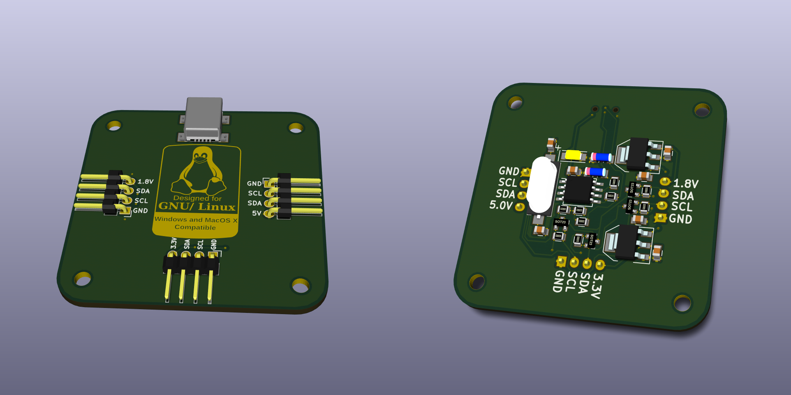
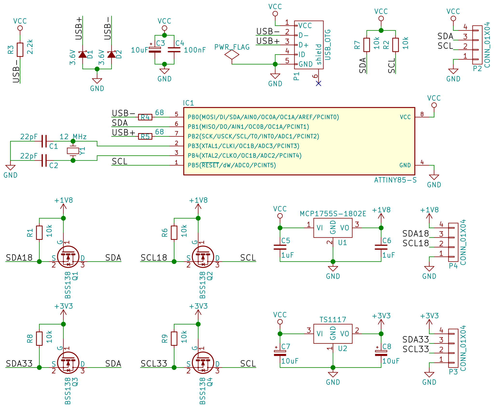

I²C Tiny USB Repository
For the access control system and different private and space related projects sre regularly uses I²C sensors/devices. For testing purposes it helps a lot, if those devices can be connected to a notebook. So far he either used a VGA adapter (VGA cables contain an I²C signal to transport the display’s DDC information. Most of the open source linux graphic card drivers allow users to access the i2c bus on the adapter using standard tools). Unfortunately newer hardware no longer provides VGA adapters and/or muxes the connectors in a strange way, so that it’s no longer easily possible to use the I²C port.
Another option is using a Bus Pirate, which supports I²C and is connected to the notebook via USB. The Bus Pirate is not supported by the standard kernel interfaces, though. This is not very nice for application development.
Fortunately the kernel supports a few USB based I²C adapters. Most of them are quite expensive in the 100€ range, but one of them requires just an ATtiny85, a crystal and a few resistors/diodes. That one is a project from Till Harbaum, who developed the adapter and provides instructions on his homepage.
sre took that information and designed his own PCB, adding voltage regulators and logic level converts for 3.3V and 1.8V. So most common sensors can be connected easily. Also the PCB has a mini USB connector instead of the huge USB-B connector.

The PCB design allows a nice sandwich-style case as visible in the graphic below (file for a lasercutter). The top left part can be put on top of the PCB and should have the same height as the USB connector. The bottom right part should be put directly below the PCB and should have at least the height of the crystal. Then the other two parts can be put at the bottom and on top of the other two parts. The result is quite stable and does not waste much space. It should be cut out of acryl glass or labels must be added to know the pin assignment.
PCB Description
So let’s have a short look at how it works. Below is the PCB’s schematic. It starts with a pull-up resistor from USB- to Vcc, which tells the USB host, that we are a low-speed device. Then there are two zener-diodes on the data lines to limit the voltage to 3.3V making the device comply with the USB standard. Next there are blocking capacitor for our ATtiny85. Then we have the USB connector, followed by the I²C pull-up resistors on SCL and SDA.
In the next row the ATtiny85 and its crystal follows. Also there are termination resistors of 68 Ohm before the USB pins. Then in the third row we can see the logic level converter for SDA and SCL for 1.8V using a BSS138. Next to it the MCP1755S-1802E provides the 1.8V reference, which is also available from one of the PCB’s pins. Then last but not least the last row contains the logic level converts for 3.3V and the matching voltage regulator (TS1117).

As you can see the hardware setup is pretty simple. The USB communication is implemented in software by bitbanging the ATtiny85’s pins, that are connected to the USB port.
Driver Support
While I’ve been told, that there are Windows and Mac OSX drivers available, I have not tested those parts myself. On Linux the kernel driver has been upstreamed and most distributions have it enabled in their kernel config. As a result it works out of the box. It can be tested by loading the i2c-dev module and using i2cdetect to find the right adapter (You will have to do the following as root). Get the number for the i2c device labeled i2c-tiny-usb and you can scan the bus for devices.
modprobe i2c-dev
i2cdetect -l
i2cdetect 8
If that works you can start developing in your favourite programming language and switch to e.g. the Raspberry Pi’s native I²C interface at any point by just changing the I²C device number. Of course the adapter can also be used to develop I²C Linux kernel drivers.